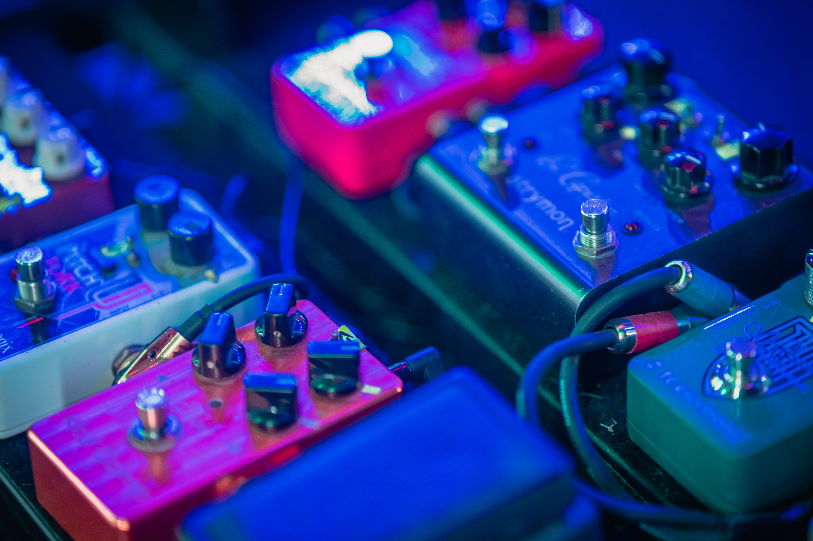

Audio

The water was everywhere. "What shall I do," Fox asked himself. He began to sing in order to find out.
"I would like to meet somebody," Fox said.
Then he met Coyote.
"I thought I was going to meet someone," Fox said.
"Where are you going?" Coyote asked.
"I've been wandering all over trying to find someone. I was worried there for a while."
"Well it's better for two people to go together....that's what they always say."
"OK. But what will we do?"
"I don't know."
"I got it!" Let's try to make the world."
"And how are we going to do that?" Coyote asked.
"Sing!" said Fox.
Why We Sing - Jaime de Angulo
Musical collaborations & hours of sounds.. It's often hard to feel the need to bring our passions to some kind of resolution. Here you will eventually (as with many of our other pursuits!) find a disjointed selection of our best and worst creations. Samples, soundscapes, vocals, patches arrangements and songs. Free to listen to & edit to your hearts content.